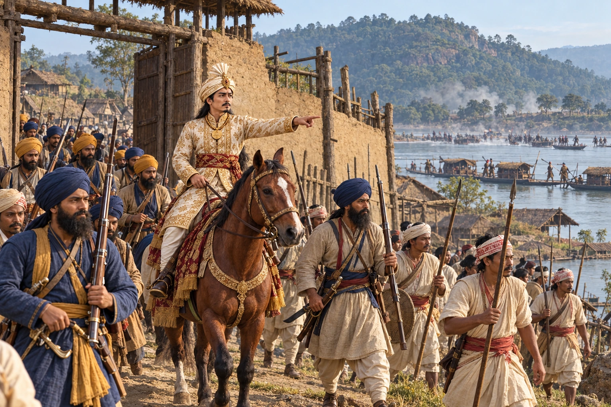

Chandrakanta Retakes Guwahati
October–December 1821 · The days of the Burmese

Raising troops in British territory, Chandrakanta Singha recaptures Assam Chowki in October and Guwahati in December 1821.
Selects the December 1821 recovery of Guwahati, distinct from October’s Assam Chowki action.
Sources
People: Chandrakanta Singha (Sudingphaa)
Open this scene in the interactive archive · Follow this event on MAP